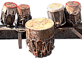
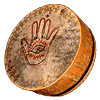
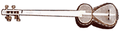
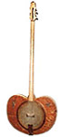
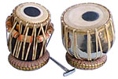
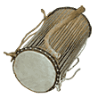

Tabala:
Появление большого басового барабана относится к XI веку, когда орден Qadiriya появился в Багдаде, и первые его участники начали использовать арабский военный барабан в обрядах.
Talking Drums: Особый тип африканских барабанов, изначально предназначенных для поддержания связи между деревнями. Звук барабана мог имитировать человеческую речь, использовалась сложная система ритмических фраз. Как правило, «говорящий барабан» - двухголовый, в форме песочных часов, кожа с обеих сторон стянута оплетенным вокруг корпуса ремнем из кожи или кишок животного. Барабан обычно держат между рукой и телом исполнителя, чтобы нажатием на оплетку регулировать высоту звука, которая и определяет «разговор».
Наиболее известные представители - dondo, dun-dun и tama.
Tambora: Двухголовый покрытый козлиной шкурой барабан, размещаемый исполнителем на колене, который обеспечивает характерный, похожий на биение сердца, такт merengue. По одной поверхности ударяют палкой, по другой - рукой.
2. Кавказский струнный щипковый инструмент, широко распространен в Армении, Азербайджане, Таджикистане и в Средней Азии (особенно в Иране).
Состоит из деревянного долбленого кузова в форме восьмерки, закрытого декой из кожи животного, и длинного грифа обычно с 23 ладами. У tar три парные(или три парные и одинарная) основные струны и две парные басовые.
Timbales: Пара одноголовых кубинских барабанов из металлических или деревянных пластин, по которым стучат палочками. Один из барабанов обычно настроен выше другого. Современная установка включает также mambo bell (длинный, широкий, низкозвучащий колокольчик) и cha-cha bell (небольшой, с высоким звуком).
Тошпулур: Тувинский народный струнный щипковый инструмент с двумя или тремя струнами. Верхняя дека-резонатор из кожи, струны раньше были из конского волоса, теперь - жильные или металлические.
Один из основных инструментов, аккомпанирующих горловому пению.

Cет из трех-пяти cпециально настроенных барабанов-литавр, используемых в обрядах Qadiriya, Сенегал, ветви старейшего в мире Суфийского ордена. Каждый барабан вырезан из ствола и покрыт коровьей шкурой, которая затянута железным кольцом и закреплена клиньями. На барабанах играет группа исполнителей: лидер - на массивном басовом барабане двумя палочками, толстыми, как ручки метлы, остальные барабанщики - рукой и палочкой.Появление большого басового барабана относится к XI веку, когда орден Qadiriya появился в Багдаде, и первые его участники начали использовать арабский военный барабан в обрядах.
Talking Drums: Особый тип африканских барабанов, изначально предназначенных для поддержания связи между деревнями. Звук барабана мог имитировать человеческую речь, использовалась сложная система ритмических фраз. Как правило, «говорящий барабан» - двухголовый, в форме песочных часов, кожа с обеих сторон стянута оплетенным вокруг корпуса ремнем из кожи или кишок животного. Барабан обычно держат между рукой и телом исполнителя, чтобы нажатием на оплетку регулировать высоту звука, которая и определяет «разговор».
Наиболее известные представители - dondo, dun-dun и tama.
Tambora: Двухголовый покрытый козлиной шкурой барабан, размещаемый исполнителем на колене, который обеспечивает характерный, похожий на биение сердца, такт merengue. По одной поверхности ударяют палкой, по другой - рукой.

Tar: 1. (Def) Арабский рамочный барабан, распространенный на Среднем Востоке. Представляет собой большой tamborine с покрытой козлиной кожей головой и состоящей из пластин твердого дерева оболочки.2. Кавказский струнный щипковый инструмент, широко распространен в Армении, Азербайджане, Таджикистане и в Средней Азии (особенно в Иране).

Состоит из деревянного долбленого кузова в форме восьмерки, закрытого декой из кожи животного, и длинного грифа обычно с 23 ладами. У tar три парные(или три парные и одинарная) основные струны и две парные басовые.
Timbales: Пара одноголовых кубинских барабанов из металлических или деревянных пластин, по которым стучат палочками. Один из барабанов обычно настроен выше другого. Современная установка включает также mambo bell (длинный, широкий, низкозвучащий колокольчик) и cha-cha bell (небольшой, с высоким звуком).

Timbales были разработаны в конце XIIX века как замена европейскому timpani и встречаются в reggae, джазе и других современных стилях.Тошпулур: Тувинский народный струнный щипковый инструмент с двумя или тремя струнами. Верхняя дека-резонатор из кожи, струны раньше были из конского волоса, теперь - жильные или металлические.
Один из основных инструментов, аккомпанирующих горловому пению.
Tabla: Пара наиболее популярных барабанов Индии. Меньший называется tabla, больший басовый - dagga.
Кожаные ремни по бокам инструмента и деревянные колышки используют для настройки. Голова каждого барабана состоит из основной мембраны с кольцевой внутренней и черным пятном в центре, называемым syahi (произносится see-ah-hee). Такая структура в сочетании с разнообразными техниками игры обеспечивают уникальное звуковое разнообразие.
Tama:
Tambourine: Одноголовый перкуссийный инструмент. Кожа натягивается в глиняном кольце с деревянными подпорками. Десять пар тарелок из цветной меди устанавливаются в пять групп по бокам инструмента.
Thumb-piano (пальцевое пианино): Древний африканский инструмент, состоящий из одного или нескольких рядов металлических пластин, закрепленных на куске дерева. Пластины дергают большим (thumb) и другими пальцами, производя звенящие полиритмичные узоры, служащие аккомпанементом историям, песням и танцам. Строй инструмента от хептатонического до хексатонического. Наиболее известные представители этого семейства - mbira (Зимбабве), kalimba (Ямайка), likembe (Заир), sanza (Мозамбик), matepe, njari, hera, budongo, ...
Tonbak (Tombak): см. zarb.
Trés: Кубинский инструмент, близкий гитаре, с тремя комплектами сдвоенных или утроенных струн, используемый в музыке son и son montuno.
Tumba: Наряду с ektar, yaktaro, и damburo, относится к лютням с корпусом-резонатором из gourd и длинным грифом. Звучащая поверхность изготавливается из кожи животного. Одна или больше непрерывно звучащих басовых струн создают аккомпанимент поющим минестрелям. Tumba также используется профессиональными музыкантами, играющими в святых местах мусульман.

Иногда их также называют dayan и bayan, что означает - правый/левый относительно исполнителя. Dagga - латунный хромированный горшок, покрытый кожей с кожаными ремнями для настройки. Корпус tabla делают из дерева shisham или красного дерева, который покрывают кожей.Кожаные ремни по бокам инструмента и деревянные колышки используют для настройки. Голова каждого барабана состоит из основной мембраны с кольцевой внутренней и черным пятном в центре, называемым syahi (произносится see-ah-hee). Такая структура в сочетании с разнообразными техниками игры обеспечивают уникальное звуковое разнообразие.
Tama:

Небольшой talking drum, часто используемый с барабанами sabar. (На языке Wolof слово обозначает барабан, способный имитировать человеческую речь.) Покрыт кожей ящерицы и полностью оплетен так, что высота звука меняется от нажатия на струны. Широко представлен в электрических группах Youssou N'Dour, Baaba Maal и других сенегальских звезд mbalax.Tambourine: Одноголовый перкуссийный инструмент. Кожа натягивается в глиняном кольце с деревянными подпорками. Десять пар тарелок из цветной меди устанавливаются в пять групп по бокам инструмента.
Thumb-piano (пальцевое пианино): Древний африканский инструмент, состоящий из одного или нескольких рядов металлических пластин, закрепленных на куске дерева. Пластины дергают большим (thumb) и другими пальцами, производя звенящие полиритмичные узоры, служащие аккомпанементом историям, песням и танцам. Строй инструмента от хептатонического до хексатонического. Наиболее известные представители этого семейства - mbira (Зимбабве), kalimba (Ямайка), likembe (Заир), sanza (Мозамбик), matepe, njari, hera, budongo, ...
Tonbak (Tombak): см. zarb.
Trés: Кубинский инструмент, близкий гитаре, с тремя комплектами сдвоенных или утроенных струн, используемый в музыке son и son montuno.
Tumba: Наряду с ektar, yaktaro, и damburo, относится к лютням с корпусом-резонатором из gourd и длинным грифом. Звучащая поверхность изготавливается из кожи животного. Одна или больше непрерывно звучащих басовых струн создают аккомпанимент поющим минестрелям. Tumba также используется профессиональными музыкантами, играющими в святых местах мусульман.